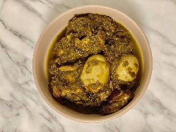
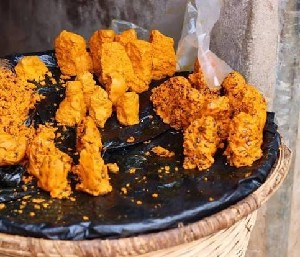
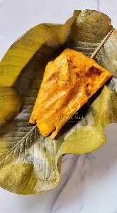
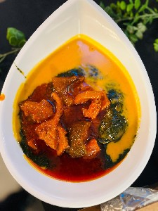
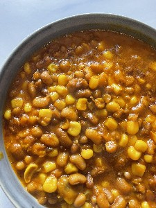
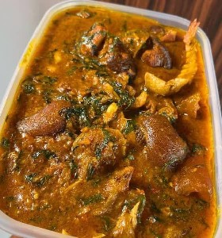
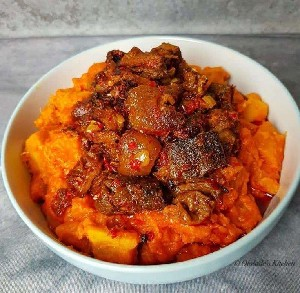
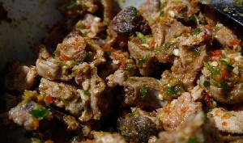
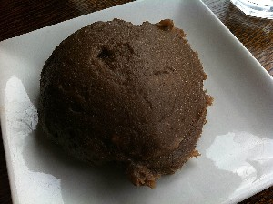

Yorùbá cuisines
• a • b • c • d • e • f • g • h • i • j • k • l • m • n • o • p • q • r • s • t • u • v • w • x • y • z •
A - a
 Ata ẹ̀wà n. A Yorùbá cuisines stew specifically made for eating beans.[ātā ɛ̀wà] Mo fẹ́ran ata ẹ̀wà I love beans stew.
Ata ẹ̀wà n. A Yorùbá cuisines stew specifically made for eating beans.[ātā ɛ̀wà] Mo fẹ́ran ata ẹ̀wà I love beans stew.
 |
Ata ẹ̀wà video
 Ayamaṣe [ājāmāʃē] A yoruba stew made for ofada rice.
Ayamaṣe [ājāmāʃē] A yoruba stew made for ofada rice.
n. ofada stew. Mi ò fẹ́ran Ayamaṣe I don't like ofada stew.
 |
Ayamaṣe video
 Àádùn A crunchy, savory, and slightly sweet treat often shaped into small balls or patties. It's name implies 'sweetness'.
Àádùn A crunchy, savory, and slightly sweet treat often shaped into small balls or patties. It's name implies 'sweetness'.
n. Cornmeal. mo ra àádùn ní ọjà I bought sweets from the martket.[ǎːdũ̀]
 |
Àádùn video
 Àbàrí [àbàɹí] A food made with blended maize.
Àbàrí [àbàɹí] A food made with blended maize.
n. maize pudding. mo ra Àbàrí jẹ. I bought Àbàrí to eat.
 |
àbàrí video
Àbùlà [àbùlà] combination of Beans soup and jute(Ewedu).
n. Àbùlà. wọ́n ń ta àbùlà ni ibí they sell àbùlà here.
 |
Àbùlà video
 Àdàlú A popular Yoruba one-pot porridge dish featuring a mixture of beans and corn.[àdàlú]
Àdàlú A popular Yoruba one-pot porridge dish featuring a mixture of beans and corn.[àdàlú]
n. combination of Beans and Maize. Àdàlú wùn mí jẹ I crave àdàlú.
 |
àdàlú video
 Àpọ̀n [àk͡pɔ̃̀] n. Apon soup (Ogbono soup) is a popular Yoruba “draw” soup made from ground African mango seeds. It is thick, nutritious, and known for its slimy texture, similar to okra soup. Mi ò fẹ́ràn ọbẹ̀ Àpọ̀n gan-an. I don't really like Àpọ̀nSoup.
Àpọ̀n [àk͡pɔ̃̀] n. Apon soup (Ogbono soup) is a popular Yoruba “draw” soup made from ground African mango seeds. It is thick, nutritious, and known for its slimy texture, similar to okra soup. Mi ò fẹ́ràn ọbẹ̀ Àpọ̀n gan-an. I don't really like Àpọ̀nSoup.
 |
àpọ̀n video
 Àsáró n. Asaro is a traditional Yoruba dish made from white yam cooked and mashed in a rich sauce of palm oil, tomatoes, peppers, and onions. It is a thick, savory yam porridge cooked as a one-pot meal.[àsáɹó] Àsárò jẹ́ oúnjẹ àtàárọ̀ pàtàkì lọ́jọ́rú ní ilé wa Asaro is a Wednesday morning special in my home.
Àsáró n. Asaro is a traditional Yoruba dish made from white yam cooked and mashed in a rich sauce of palm oil, tomatoes, peppers, and onions. It is a thick, savory yam porridge cooked as a one-pot meal.[àsáɹó] Àsárò jẹ́ oúnjẹ àtàárọ̀ pàtàkì lọ́jọ́rú ní ilé wa Asaro is a Wednesday morning special in my home.
 |
àsáró video
 Àsun [àsũ̄] A meal prepare from roasted and pepped goat meat.
Àsun [àsũ̄] A meal prepare from roasted and pepped goat meat.
n. roasted goat meat. kílódé tí o fi jẹ àsun? Why did you eat roasted goat meat?
 |
àsun video
 Àmàlà dúdú n. A staple food made with yam peel. Mo jẹ àmàlà dúdú ni àná i ate black Àmàlà yesterday.[àmàlà dúdú]
Àmàlà dúdú n. A staple food made with yam peel. Mo jẹ àmàlà dúdú ni àná i ate black Àmàlà yesterday.[àmàlà dúdú]
 |
àmàlà video